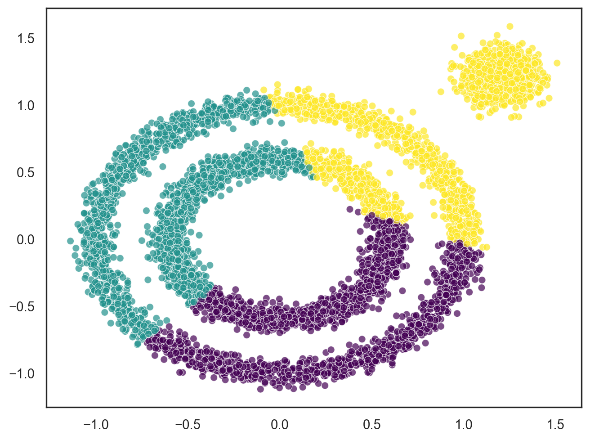

import numpy as np
import matplotlib.pyplot as plt
import seaborn as sns
from sklearn import datasets
# Generate synthetic datasets
X1, y1 = datasets.make_circles(n_samples=5000, factor=.6, noise=.05)
X2, y2 = datasets.make_blobs(n_samples=1000, n_features=2, centers=[[1.2, 1.2]], cluster_std=[[.1]], random_state=42)
X = np.concatenate((X1, X2))
# Create a scatter plot
sns.set(style="white")
plt.figure(figsize=(8, 6))
sns.scatterplot(x=X[:, 0], y=X[:, 1], marker='o', alpha=0.7)
plt.show()Traditioal K-means clustering is well-suited for certain types of datasets and scenarios. It tends to perform well on datasets in which the clusters have a roughly circular shape in the feature space, similar variances, and approximately equal sizes. However, since K-means assumes that clusters are spherical and equally sized, there are a lot of situations that K-means cannot handle. For example, if the clusters have irregular shapes, varying densities, or the clusters are not convex, K-means will have poor performance on the datasets. As a result, alternative clustering algorithms may be considered. DBSCAN (Density-Based Spatial Clustering of Applications with Noise) is a great candicate to handle such complex datasets.
DBSCAN is a clustering algorithm designed to identify clusters in a dataset based on the density of data points. Unlike K-means, which assumes that clusters are spherical and equally sized, DBSCAN can discover clusters with irregular shapes and handle varying cluster densities.
The key idea behind DBSCAN is to group together data points that are close to each other in high-density regions and separate regions of lower density. It works based on the following parameters:
- Epsilon (
eps) - Minimum Points (
min_samples)
Epsilon defines the radius around a data point within which the algorithm looks for neighboring points. It is a key parameter that influences the size of the neighborhood considered for density estimation.
Minimum Points specifies the minimum number of data points required to form a dense region. If a point has at least MinPts points within its epsilon neighborhood, it is considered a core point. Points that have fewer neighbors than MinPts but fall within the epsilon neighborhood of a core point are considered border points, while those with no neighbors are treated as noise or outliers.
The DBSCAN algorithm proceeds as follows:
- Identify core points, which are data points with at least MinPts neighbors within a radius of eps.
- Form clusters by connecting core points that are within each other’s epsilon neighborhood.
- Expand the clusters by adding border points to them. Border points are points that have fewer than MinPts neighbors but are within the epsilon neighborhood of a core point.
- Identify noise points as data points that do not belong to any cluster.
The following example shows how DBSCAN can perform better on a non-convex dataset than K-means, and how we can adjust eps and min_samples parameters to achieve the goal of clustering. First, let’s generate a synthetic data set with 3 clusters, 2 of which are non-convex.
Let’s see how K-means work on the dataset. The n_clusters is set to 3 knowing that there are 3 clusters in the dataset.
from sklearn.cluster import KMeans
# Perform KMeans clustering
kmeans = KMeans(n_clusters=3, random_state=42, n_init=10)
y_pred = kmeans.fit_predict(X)
# Create a scatter plot
sns.set(style="white")
plt.figure(figsize=(8, 6))
sns.scatterplot(x=X[:, 0], y=X[:, 1], hue=y_pred, palette='viridis', legend=False, marker='o', alpha=0.7)
plt.show();
Apparently, K-means can not identify the two non-convex clusters. Let’s set up a DBSCAN to see how it performs.
from sklearn.cluster import DBSCAN
# Perform DBSCAN clustering
dbscan = DBSCAN(eps=0.2, min_samples=5)
y_pred = dbscan.fit_predict(X)
# Create a scatter plot
sns.set(style="white")
plt.figure(figsize=(8, 6))
sns.scatterplot(x=X[:, 0], y=X[:, 1], hue=y_pred, palette='viridis', legend=False, marker='o', alpha=0.7)
plt.show()The above DBSCAN algorithm sets the eps at 0.2 and min_samples at 0.5. It can differentiate between the convex cluster and the non-convex clusters, which a sign of improvement. However, it is not differentiating the two non-convex clusters, which could mean that the size of the dense region may be too large. We can either decrease the eps or min_samples to shrink the dense region.
# Update hyperparameters for DBSCAN clustering
dbscan = DBSCAN(eps=0.1, min_samples=5)
y_pred = dbscan.fit_predict(X)
# Create a scatter plot
sns.set(style="white")
plt.figure(figsize=(8, 6))
sns.scatterplot(x=X[:, 0], y=X[:, 1], hue=y_pred, palette='viridis', legend=False, marker='o', alpha=0.7)
plt.show()By decreasing the eps to 0.1, the DBSCAN alrogithm now does an excellent job in differentiating the two non-convex clusters.
The example demonstrate DBSCAN’s ability to handle clusters of arbitrary shapes, insensitivity to the order of the input data, and ability to discover clusters of different shapes and sizes. Additionally, DBSCAN can automatically determine the number of clusters in the dataset. However, DBSCAN’s performance can be sensitive to the choice of parameters, and it may struggle with datasets of varying densities. Tuning these parameters appropriately for the specific dataset is crucial for obtaining meaningful clustering results.